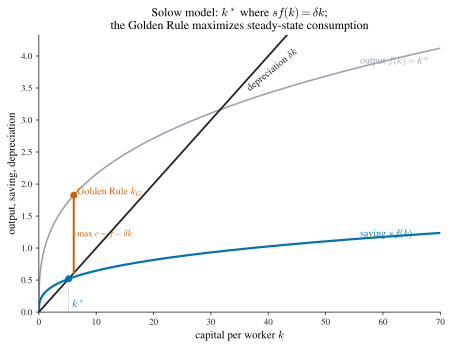
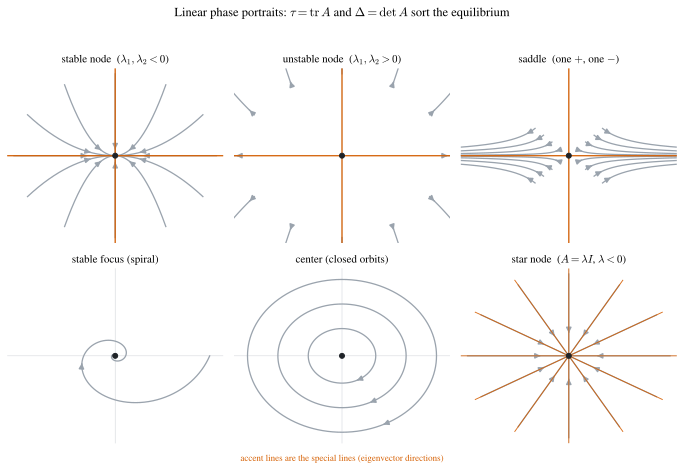
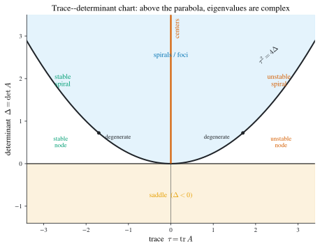
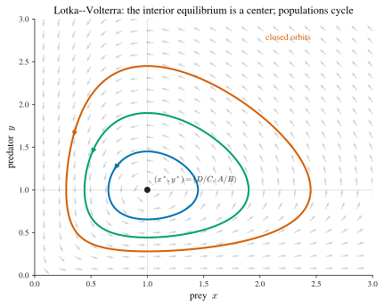
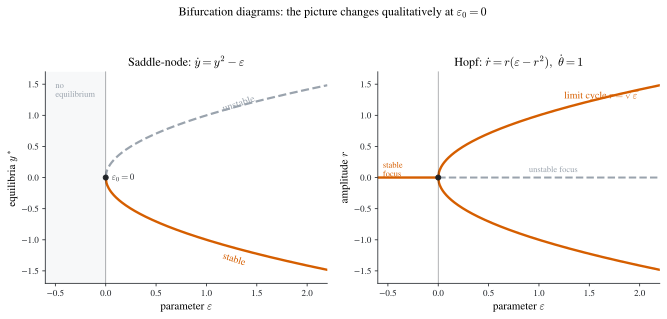

2 Ordinary Differential Equations
Dynamic optimization is, at bottom, the optimization of trajectories, and a trajectory is the solution of a differential equation. Before we can ask which path is best — the business of the later chapters — we must understand what paths are even available: how an ordinary differential equation (ODE) constrains motion, when it pins motion down uniquely, and what its solutions look like when we cannot write them down. This chapter assembles that toolkit.
An ordinary differential equation is an equation involving an unknown function and its derivatives,
\[ F\bigl(t,\,x,\,\dot x,\,\dots,\,x^{(n)}\bigr)=0, \tag{2.1}\]
where \(x=x(t)\) is a function of \(t\in\mathbb{R}\) and \(\dot x=\mathrm{d}x/\mathrm{d}t\). The order of Equation 2.1 is the order \(n\) of the highest derivative appearing. A solution is a function \(x(t)\) that satisfies the equation identically on some interval. A solution carrying \(n\) free constants — as many as the order — is the general solution; fixing the constants by side data (an initial condition \(x(t_0)=x_0\), say) selects a particular solution. The graph of any solution in the \(t\)–\(x\) plane is an integral curve, and the general solution traces a whole family of integral curves.
The chapter splits into three movements, mirroring three questions one can ask of Equation 2.1.
- Can we solve it explicitly? (Section 2.1) For a short list of structured first- and second-order equations the answer is yes, by elementary integration — reduce the equation, step by step, to a form one can integrate directly. Most equations resist this, but the solvable cases recur constantly and supply intuition.
- Does a solution exist, and is it unique? (Section 2.2) Even when we cannot solve, we can often prove that a unique solution exists and depends continuously on the data — the Picard–Lindelöf theory — and we can locate the exceptional singular solutions where uniqueness fails.
- What do solutions look like? (Section 2.3) The qualitative or geometric theory reads the shape of the solution family off the equation itself — stability, phase portraits, the trace–determinant classification of equilibria, linearization of nonlinear systems, and bifurcations. This is the part that matters most for dynamic optimization, because the optimality conditions of later chapters are themselves differential systems whose phase diagrams we will need to read.
Economic models thread through all three: the logistic law of population growth, the Solow growth model and its Golden Rule, and the Lotka–Volterra predator–prey system.
2.1 Elementary solution methods
We collect the equations that yield to elementary integration: a finite sequence of algebraic rearrangements and integrations reducing the problem to the trivial equation \(\dot x=f(t)\), whose solution is \(x(t)=\int f(t)\,\mathrm{d}t+C\). Only a small minority of equations are solvable this way, but they are the ones we meet again and again.
First-order equations
A first-order equation in solved (explicit) form is
\[ \dot x=f(t,x). \tag{2.2}\]
When the right-hand side is free of \(t\), \(\dot x=f(x)\), the equation is autonomous: the law of motion depends only on the state, not on the clock. Autonomous equations are the backbone of the qualitative theory in Section 2.3. We work through five structured families.
Separable equations
A separable equation has the form
\[ \dot x=f(t)\,g(x). \tag{2.3}\]
If \(g(x_0)=0\) for some \(x_0\), then the constant \(x\equiv x_0\) is a solution. Away from the zeros of \(g\), divide and integrate:
\[ \frac{1}{g(x)}\,\mathrm{d}x=f(t)\,\mathrm{d}t \quad\Longrightarrow\quad \int\frac{1}{g(x)}\,\mathrm{d}x=\int f(t)\,\mathrm{d}t+C, \tag{2.4}\]
giving the general solution implicitly.
Example 2.1 (A separable equation with two branches) For \(\dot x=t/x\) we have \(x\,\mathrm{d}x=t\,\mathrm{d}t\), hence \(x^2=t^2+C\). This implicit relation splits into two branches, \(x=\sqrt{t^2+C}\) and \(x=-\sqrt{t^2+C}\), with in general different natural domains. The initial condition \(x(0)=1\) selects the first branch, \(x=\sqrt{t^2+1}\), which is defined on all of \(\mathbb{R}\); by contrast \(x=\sqrt{t^2-1}\) would live only on \((-\infty,-1]\cup[1,\infty)\). A single implicit solution can thus harbor several genuinely distinct integral curves with distinct domains.
Example 2.2 (An initial-value problem with finite domain) For \(\dot x=1+x^2\), \(x(0)=0\): separating gives \(\mathrm{d}x/(1+x^2)=\mathrm{d}t\), so \(x=\tan(t+C)\), and \(x(0)=0\) forces \(C=0\). The solution \(x=\tan t\) is defined only on \((-\tfrac\pi2,\tfrac\pi2)\) — even though the right-hand side \(1+x^2\) is perfectly smooth everywhere. The integral curve runs off to infinity at the ends of its interval. Existence “in the large” is not guaranteed by smoothness of \(f\); this example recurs in Section 2.2.1.
The leading economic application of a separable equation is the logistic law of growth.
Example 2.3 (The Verhulst–Pearl (logistic) model) Let \(x(t)\) be the size of a population in a region with finite resources, governed by
\[ \dot x=r\,x\Bigl(1-\frac{x}{K}\Bigr),\qquad x\ge 0, \tag{2.5}\]
where \(r>0\) is the intrinsic growth rate and \(K>0\) the carrying capacity. The constants \(x\equiv 0\) and \(x\equiv K\) are equilibrium solutions. For \(0<x_0<K\) or \(x_0>K\), set \(y=x/K\), so \(\dot y=r\,y(1-y)\); separating and using partial fractions, \[ \int\frac{\mathrm{d}y}{y(1-y)}=\int r\,\mathrm{d}t \quad\Longrightarrow\quad \ln\Bigl|\frac{y}{1-y}\Bigr|=rt+c. \] Solving for \(y\) and undoing the substitution, \[ x(t)=\frac{K}{1\pm e^{c-rt}}, \tag{2.6}\] with \(c\) and the sign fixed by \(x(0)\). As \(t\to\infty\), \(x(t)\to K\) monotonically from either side: the population settles at carrying capacity. The S-shaped curve \(1/(1+e^{\alpha+\beta x})\) is the logistic function; we re-derive the convergence of Equation 2.6 without solving — by reading the phase line — in Section 2.3.2.1.
Homogeneous equations
An equation is homogeneous when its right-hand side depends on \(t,x\) only through the ratio \(x/t\):
\[ \dot x=f\Bigl(\frac{x}{t}\Bigr). \tag{2.7}\]
The substitution \(u=x/t\), i.e. \(x=ut\), turns it separable: from \(\dot x=\dot u\,t+u\) we get \(\dot u\,t+u=f(u)\), hence
\[ \frac{\mathrm{d}u}{f(u)-u}=\frac{\mathrm{d}t}{t}, \tag{2.8}\]
which integrates; then back-substitute \(u=x/t\).
Example 2.4 (A homogeneous equation) For \(\dot x=(x-t)/(x+t)\), set \(u=x/t\): \(\dot u\,t+u=(u-1)/(u+1)\), so \(\dot u\,t=-(u^2+1)/(u+1)\) and \[ \int\frac{u+1}{u^2+1}\,\mathrm{d}u=-\int\frac{\mathrm{d}t}{t}+C, \] giving \(\tfrac12\ln(u^2+1)+\arctan u=-\ln|t|+C\). In the original variables, \[ \ln\bigl(x^2+t^2\bigr)+2\arctan\!\Bigl(\frac{x}{t}\Bigr)=C. \] The solution is implicit and, like Example 2.1, multivalued. With \(x(1)=1\) one finds \(C=\ln 2+\tfrac\pi2\).
A near-homogeneous equation of the form \(\dot x=f\bigl((a_1x+b_1t+c_1)/(a_2x+b_2t+c_2)\bigr)\) with \(\bigl|\begin{smallmatrix}a_1&b_1\\a_2&b_2\end{smallmatrix}\bigr|\ne 0\) is made homogeneous by translating the origin to the intersection of the two lines: put \(x=u+\alpha\), \(t=s+\beta\) with \((\alpha,\beta)\) solving \(a_1\alpha+b_1\beta+c_1=0\), \(a_2\alpha+b_2\beta+c_2=0\). The constants cancel and one is left with \(\mathrm{d}u/\mathrm{d}s=f\bigl((a_1u+b_1s)/(a_2u+b_2s)\bigr)\), homogeneous in \((u,s)\).
Exact equations and integrating factors
Write a first-order equation in differential form,
\[ M(t,x)\,\mathrm{d}t+N(t,x)\,\mathrm{d}x=0. \tag{2.9}\]
It is exact if the left side is the total differential of some potential \(U(t,x)\), i.e. \(\mathrm{d}U=M\,\mathrm{d}t+N\,\mathrm{d}x\), for then Equation 2.9 reads \(\mathrm{d}U=0\) and the general solution is the implicit level set \(U(t,x)=C\).
Theorem 2.1 (Exactness criterion) Suppose \(M,N\) are continuously differentiable on a simply-connected region. Then Equation 2.9 is exact if and only if \[ \frac{\partial M}{\partial x}=\frac{\partial N}{\partial t}. \tag{2.10}\] When it holds, a potential is \[ U(t,x)=\int_{t_0}^{t}M(s,x)\,\mathrm{d}s+\int_{x_0}^{x}N(t_0,y)\,\mathrm{d}y, \tag{2.11}\] and the general solution is \(U(t,x)=C\).
Proof. Necessity: if \(\mathrm{d}U=M\,\mathrm{d}t+N\,\mathrm{d}x\) then \(M=U_t\) and \(N=U_x\), so \(M_x=U_{tx}=U_{xt}=N_t\) by equality of mixed partials. Sufficiency: define \(U\) by Equation 2.11. Then \(U_t=M(t,x)\) directly by the fundamental theorem of calculus applied to the first integral (the second integral is \(t\)-independent). For \(U_x\), differentiate under the integral sign, \[ U_x=\int_{t_0}^{t}M_x(s,x)\,\mathrm{d}s+N(t_0,x) =\int_{t_0}^{t}N_t(s,x)\,\mathrm{d}s+N(t_0,x)=N(t,x), \] using Equation 2.10 in the middle step and the fundamental theorem in the last. Hence \(\mathrm{d}U=M\,\mathrm{d}t+N\,\mathrm{d}x\). \(\;\blacksquare\)
Example 2.5 (An exact equation) Consider \(2tx\,\mathrm{d}t+(t^2+x)\,\mathrm{d}x=0\). Here \(M_x=2t=N_t\), so it is exact. Building the potential from Equation 2.11 gives \(U=t^2x+\tfrac12 x^2\), so the general solution is \(x^2+2t^2x=C\). With \(x(0)=1\) this is \(x^2+2t^2x=1\), i.e. \(x=\sqrt{t^4+1}-t^2\).
When Equation 2.10 fails, one may still seek an integrating factor \(\mu(t,x)\) rendering \(\mu M\,\mathrm{d}t+\mu N\,\mathrm{d}x=0\) exact. The exactness condition \((\mu M)_x=(\mu N)_t\) is in general a partial differential equation for \(\mu\) — harder than the original problem — but two special cases are tractable.
Proposition 2.1 (Integrating factors depending on one variable)
- If \(\dfrac{1}{N}\bigl(M_x-N_t\bigr)\) depends on \(t\) alone, then a \(t\)-only integrating factor exists: \[ \mu(t)=\exp\!\Bigl(\int\frac{1}{N}\bigl(M_x-N_t\bigr)\,\mathrm{d}t\Bigr). \tag{2.12}\]
- If \(\dfrac{1}{M}\bigl(N_t-M_x\bigr)\) depends on \(x\) alone, then an \(x\)-only integrating factor exists: \[ \mu(x)=\exp\!\Bigl(\int\frac{1}{M}\bigl(N_t-M_x\bigr)\,\mathrm{d}x\Bigr). \tag{2.13}\]
Proof. For (i) seek \(\mu=\mu(t)\). Exactness \((\mu M)_x=(\mu N)_t\) expands to \(\mu M_x=\dot\mu\,N+\mu N_t\), i.e. \(\mu\bigl(M_x-N_t\bigr)=\dot\mu\,N\), so \(\dot\mu/\mu=\bigl(M_x-N_t\bigr)/N\). The right side being a function of \(t\) alone makes this a separable ODE for \(\mu\), integrating to Equation 2.12. Case (ii) is symmetric, exchanging the roles of \(t\) and \(x\). \(\;\blacksquare\)
Example 2.6 (An integrating factor in \(t\)) For \((t^2+x^2+t)\,\mathrm{d}t+tx\,\mathrm{d}x=0\), we have \(M_x=2x\), \(N_t=x\), so \(\frac1N(M_x-N_t)=\frac{x}{tx}=\frac1t\), a function of \(t\) alone. Hence \(\mu=\exp\!\int\frac{\mathrm{d}t}{t}=t\). Multiplying through, \((t^3+tx^2+t^2)\,\mathrm{d}t+t^2x\,\mathrm{d}x=0\) is exact and equals \(\mathrm{d}\bigl(\tfrac{t^4}{4}+\tfrac{x^2t^2}{2}+\tfrac{t^3}{3}\bigr)\), so the general solution is \(\tfrac{t^4}{4}+\tfrac{x^2t^2}{2}+\tfrac{t^3}{3}=C\).
Linear and Bernoulli equations
The first-order linear equation is
\[ \dot x+p(t)\,x=f(t). \tag{2.14}\]
It is homogeneous if \(f\equiv 0\), and the associated homogeneous equation \(\dot x+p(t)x=0\) is separable, with solution \(x=C\exp\!\bigl(-\int p\bigr)\). The general theory of linear equations — that the difference of any two solutions of Equation 2.14 solves the homogeneous equation, so the general solution is “a particular solution plus the homogeneous family” — applies. The cleanest route is an integrating factor: multiply Equation 2.14 by \(\varphi(t)=\exp\!\bigl(\int_{t_0}^t p(s)\,\mathrm{d}s\bigr)\). Because \(\dot\varphi=p\,\varphi\), the left side collapses to a derivative, \[ \frac{\mathrm{d}}{\mathrm{d}t}\bigl(\varphi\,x\bigr)=\varphi\,\dot x+\varphi\,p\,x=\varphi\,f, \] so integrating gives the variation-of-constants formula
\[ x(t)=\frac{1}{\varphi(t)}\Bigl(\int_{t_0}^{t}\varphi(s)\,f(s)\,\mathrm{d}s+C\Bigr), \qquad \varphi(t)=\exp\!\Bigl(\int_{t_0}^{t}p(s)\,\mathrm{d}s\Bigr). \tag{2.15}\]
It is the method — integrating factor or, equivalently, varying the constant \(C\to C(t)\) in the homogeneous solution — that matters, not the formula.
Example 2.7 (A linear equation) For \(\dot x-x\cos t=2\cos t\), \(x(0)=0\): here \(p=-\cos t\), so \(\varphi=e^{-\sin t}\). Then \(\frac{\mathrm{d}}{\mathrm{d}t}\bigl(x e^{-\sin t}\bigr)=2\cos t\,e^{-\sin t}\), and integrating from \(0\), \(x e^{-\sin t}=2\bigl[1-e^{-\sin t}\bigr]\), i.e. \(x=2\bigl(e^{\sin t}-1\bigr)\).
The Bernoulli equation \(\dot x+p(t)x=f(t)x^n\) (\(n\ne 0,1\)) reduces to linear form: divide by \(x^n\) and set \(y=x^{1-n}\). Since \(\dot y=(1-n)x^{-n}\dot x\), the equation becomes \(\tfrac{1}{1-n}\dot y+p(t)y=f(t)\), a linear equation Equation 2.14 in \(y\), solved by Equation 2.15.
Two-dimensional constant-coefficient linear systems
A linear system is \(\dot x=A(t)\,x+b(t)\) with \(A(t)\) an \(n\times n\) matrix function and \(b(t)\) an \(n\)-vector. We focus on the constant-coefficient homogeneous planar case,
\[ \dot x=A\,x,\qquad A\in\mathbb{R}^{2\times 2}. \tag{2.16}\]
We first record the general structure, then build the explicit solution from the matrix exponential.
Definition 2.1 (Linear independence and fundamental matrix) Vector functions \(x_1(t),\dots,x_m(t)\) are linearly dependent if there are constants \(\alpha_1,\dots,\alpha_m\), not all zero, with \(\sum_k\alpha_k x_k(t)=0\) for all \(t\); otherwise they are linearly independent. A fundamental matrix of \(\dot x=A(t)x\) is a matrix \(X(t)\) whose columns are \(n\) linearly independent solutions; the general solution is then \(x=X(t)c\), \(c\in\mathbb{R}^n\).
Theorem 2.2 (Existence and structure of fundamental matrices) For \(\dot x=A(t)x\) with \(A(\cdot)\) continuous there exist \(n\) linearly independent solutions, and every solution is a linear combination of them. If \(X\) is one fundamental matrix, the set of all fundamental matrices is exactly \(\{XP:\det P\ne 0\}\). A fundamental matrix itself solves the matrix equation \(\dot X=A(t)X\).
For the constant-coefficient case the fundamental matrix is an explicit exponential. Motivated by the scalar case \(\dot x=ax\) with solution \(e^{at}=\sum_{k\ge 0}(at)^k/k!\), define for a square matrix \(B\) the matrix exponential
\[ e^{B}:=\sum_{k=0}^{\infty}\frac{B^{k}}{k!}, \tag{2.17}\]
a series that converges entrywise for every \(B\).
Proposition 2.2 (Properties of the matrix exponential) Let \(O,I\) denote the zero and identity matrices. Then:
\(e^{B}\) is invertible with \(\bigl(e^{B}\bigr)^{-1}=e^{-B}\);
\(e^{It}=e^{t}I\) for \(t\in\mathbb{R}\);
if \(B=\operatorname{diag}(B_1,\dots,B_k)\) is block-diagonal, so is \(e^{B}=\operatorname{diag}(e^{B_1},\dots,e^{B_k})\);
\(e^{B+C}=e^{B}e^{C}\) whenever \(BC=CB\);
\(e^{P^{-1}BP}=P^{-1}e^{B}P\) for any invertible \(P\);
\(\dfrac{\mathrm{d}}{\mathrm{d}t}\,e^{Bt}=B\,e^{Bt}\) for all \(t\in\mathbb{R}\).
Proof. (ii), (iii), (v) are immediate from the series (in (v), \(\bigl(P^{-1}BP\bigr)^k=P^{-1}B^kP\)). For (iv), expand \(e^{B+C}\) by the binomial theorem term by term; commutativity \(BC=CB\) is exactly what licenses \(\sum_k(B+C)^k/k!=\bigl(\sum_i B^i/i!\bigr)\bigl(\sum_j C^j/j!\bigr)\). Then (i) follows from (iv) with \(C=-B\) (which commutes with \(B\)): \(e^{B}e^{-B}=e^{O}=I\). For (vi), differentiate the series term by term (justified by uniform convergence on compacts), \[ \frac{\mathrm{d}}{\mathrm{d}t}\sum_{k=0}^{\infty}\frac{B^{k}t^{k}}{k!} =\sum_{k=1}^{\infty}\frac{B^{k}t^{k-1}}{(k-1)!} =B\sum_{k=1}^{\infty}\frac{(Bt)^{k-1}}{(k-1)!}=B\,e^{Bt}. \quad\blacksquare \]
Property (vi) says precisely that \(X(t)=e^{At}\) is a fundamental matrix of Equation 2.16: it solves \(\dot X=AX\) and is invertible by (i). The general solution is \(x(t)=e^{At}c\), and with \(x(0)=x_0\) we get \(x(t)=e^{At}x_0\). It remains to compute \(e^{At}\), which we do through the Jordan form. Over \(\mathbb{C}\), any \(2\times 2\) matrix \(A\) is similar to one of two Jordan types, \[ J=\begin{pmatrix}\lambda_1&0\\0&\lambda_2\end{pmatrix} \quad\text{or}\quad J=\begin{pmatrix}\lambda&1\\0&\lambda\end{pmatrix}, \qquad P^{-1}AP=J, \] where \(\lambda_1,\lambda_2\) (or \(\lambda\)) are the eigenvalues of \(A\). By (v), \(e^{At}=P\,e^{Jt}P^{-1}\), so \(P\,e^{Jt}\) is also a fundamental matrix. The two cases give the two canonical solution forms.
Case (I): distinct eigenvalues \(\lambda_1\ne\lambda_2\). Write \(P=(\xi_1,\xi_2)\) in columns. From \(AP=PJ\) and the diagonal \(J\), \[ (A\xi_1,A\xi_2)=(\xi_1,\xi_2)\begin{pmatrix}\lambda_1&0\\0&\lambda_2\end{pmatrix} =(\lambda_1\xi_1,\lambda_2\xi_2), \] so \(A\xi_j=\lambda_j\xi_j\): the columns of \(P\) are eigenvectors. Since \(e^{Jt}=\operatorname{diag}(e^{\lambda_1 t},e^{\lambda_2 t})\), \[ P\,e^{Jt}=\bigl(e^{\lambda_1 t}\xi_1,\;e^{\lambda_2 t}\xi_2\bigr), \] so a fundamental system is
\[ e^{\lambda_1 t}\,\xi_1,\qquad e^{\lambda_2 t}\,\xi_2, \tag{2.18}\]
with \(\xi_1,\xi_2\) the eigenvectors. If \(\lambda_1,\lambda_2\) are a complex-conjugate pair, the solutions Equation 2.18 are complex conjugates; taking real and imaginary parts of \(e^{\lambda_1 t}\xi_1\) yields two real solutions, which form a real fundamental system.
Case (II): repeated eigenvalue \(\lambda_1=\lambda_2=:\lambda\). Write \(J=\lambda I+\varepsilon\) with \(\varepsilon=\bigl(\begin{smallmatrix}0&1\\0&0\end{smallmatrix}\bigr)\), which is nilpotent, \(\varepsilon^2=O\). Since \(\lambda I\) and \(\varepsilon\) commute, (iv) gives \(e^{Jt}=e^{\lambda t}e^{\varepsilon t}=e^{\lambda t}(I+\varepsilon t)\), and then \[ e^{At}=P\,e^{\lambda t}(I+\varepsilon t)\,P^{-1} =e^{\lambda t}\bigl(I+(A-\lambda I)t\bigr), \tag{2.19}\] using \(P\varepsilon P^{-1}=A-\lambda I\). The two columns of Equation 2.19 form a fundamental system.
For the inhomogeneous system \(\dot x=Ax+b\) with constant \(b\) and invertible \(A\), a particular solution is the constant \(x=-A^{-1}b\) (it kills \(\dot x\) and solves \(Ax+b=0\)). The general solution is this plus the homogeneous family. Alternatively, variation of parameters: with \(X(t)\) a fundamental matrix of \(\dot x=Ax\), seek \(x=X(t)c(t)\). Substituting, \(\dot X c+X\dot c=AXc+b=\dot X c+b\), so \(\dot c=X^{-1}b\), which integrates to give \(c(t)\).
Example 2.8 (A system with distinct real eigenvalues) Solve \(\dot x=2x+y\), \(\dot y=y\). The matrix \(A=\bigl(\begin{smallmatrix}2&1\\0&1\end{smallmatrix}\bigr)\) has eigenvalues \(\lambda_1=1\), \(\lambda_2=2\). For \(\lambda_1=1\): \((A-I)\xi=0\) reads \(x_1+x_2=0\), so \(\xi_1=\bigl(\begin{smallmatrix}-1\\1\end{smallmatrix}\bigr)\). For \(\lambda_2=2\): \((A-2I)\xi=0\) reads \(x_2=0\), so \(\xi_2=\bigl(\begin{smallmatrix}1\\0\end{smallmatrix}\bigr)\). By Equation 2.18 the general solution is \[ \begin{pmatrix}x\\y\end{pmatrix} =c_1 e^{t}\begin{pmatrix}-1\\1\end{pmatrix}+c_2 e^{2t}\begin{pmatrix}1\\0\end{pmatrix} =\begin{pmatrix}-c_1 e^{t}+c_2 e^{2t}\\ c_1 e^{t}\end{pmatrix}. \] (One can also solve directly: \(\dot y=y\) gives \(y=c_1 e^{t}\), then \(\dot x=2x+c_1 e^{t}\) is linear, recovering the same answer.)
Example 2.9 (A system with imaginary eigenvalues) Solve \(\dot x=y\), \(\dot y=-x\). Here \(A=\bigl(\begin{smallmatrix}0&1\\-1&0\end{smallmatrix}\bigr)\) with \(\det(A-\lambda I)=\lambda^2+1=0\), so \(\lambda=\pm i\). For \(\lambda=i\) the eigenvector solves \(-ix_1+x_2=0\), giving \(\xi=\bigl(\begin{smallmatrix}1\\i\end{smallmatrix}\bigr)\). Then \[ e^{it}\begin{pmatrix}1\\i\end{pmatrix} =\begin{pmatrix}\cos t\\-\sin t\end{pmatrix}+i\begin{pmatrix}\sin t\\\cos t\end{pmatrix}, \] whose real and imaginary parts form a real fundamental system; the general solution is \[ \begin{pmatrix}x\\y\end{pmatrix} =c_1\begin{pmatrix}\cos t\\-\sin t\end{pmatrix}+c_2\begin{pmatrix}\sin t\\\cos t\end{pmatrix}. \] Each trajectory satisfies \(x^2+y^2=C\): multiplying the equations, \(x\dot x+y\dot y=0\), so \(\tfrac{\mathrm{d}}{\mathrm{d}t}(x^2+y^2)=0\). The orbits are circles about the origin — a center (Section 2.3.2.2).
Example 2.10 (A defective (repeated-eigenvalue) system) Solve \(\dot x=x+y\), \(\dot y=y\). The matrix \(A=\bigl(\begin{smallmatrix}1&1\\0&1\end{smallmatrix}\bigr)\) has the double eigenvalue \(\lambda=1\) with only one independent eigenvector \(\bigl(\begin{smallmatrix}1\\0\end{smallmatrix}\bigr)\). By Equation 2.19 a fundamental system is \(e^{t}\bigl(\begin{smallmatrix}1\\0\end{smallmatrix}\bigr)\) and \(e^{t}\bigl(\begin{smallmatrix}t\\1\end{smallmatrix}\bigr)\), so \[ x=(c_1+c_2 t)e^{t},\qquad y=c_2 e^{t}. \]
Second-order linear equations
A second-order linear equation is \(\ddot x+p(t)\dot x+q(t)x=r(t)\); it is homogeneous when \(r\equiv 0\). As with first-order linear equations, the difference of any two solutions solves the homogeneous equation, so a particular solution plus the homogeneous family is the general solution. We treat the constant-coefficient homogeneous case
\[ \ddot x+p\,\dot x+q\,x=0. \tag{2.20}\]
Setting \(y=\dot x\) turns Equation 2.20 into the planar system \(\dot x=y\), \(\dot y=-qx-py\), with matrix \(\bigl(\begin{smallmatrix}0&1\\-q&-p\end{smallmatrix}\bigr)\) whose characteristic equation is \(\lambda^2+p\lambda+q=0\). So Equation 2.20 reduces to Section 2.1.1.5. Directly, the trial solution \(x=e^{rt}\) substituted into Equation 2.20 gives \(e^{rt}(r^2+pr+q)=0\), so \(r\) must solve the characteristic equation
\[ r^2+pr+q=0. \tag{2.21}\]
Let \(r_1,r_2\) be its roots. Three cases arise.
Case I — distinct real roots \(r_1\ne r_2\). A fundamental system is \(e^{r_1 t},e^{r_2 t}\) and the general solution is \(x=c_1 e^{r_1 t}+c_2 e^{r_2 t}\).
Case II — complex-conjugate roots \(r_{1,2}=a\pm ib\), \(b\ne 0\). The complex solutions \(e^{(a\pm ib)t}=e^{at}(\cos bt\pm i\sin bt)\) have real and imaginary parts \(e^{at}\cos bt\) and \(e^{at}\sin bt\), which form a real fundamental system; the general solution is \(x=e^{at}(c_1\cos bt+c_2\sin bt)\).
Case III — repeated real root \(r_1=r_2=r=-p/2\). Then \(e^{rt}\) is one solution; a second is \(te^{rt}\). Indeed, substituting \(x=te^{rt}\) into Equation 2.20, \[ (te^{rt})''+p(te^{rt})'+q(te^{rt}) =e^{rt}\bigl[(2r+r^2 t)+p(1+rt)+qt\bigr] =e^{rt}\bigl[(2r+p)+(r^2+pr+q)t\bigr]=0, \] both brackets vanishing (\(r=-p/2\) kills the first, the characteristic equation the second). So the general solution is \(x=e^{rt}(c_1+c_2 t)\).
Example 2.11 (An inhomogeneous second-order equation) Solve \(\ddot x+x=1\). A particular solution is the constant \(x=1\). The homogeneous equation \(\ddot x+x=0\) has characteristic roots \(\pm i\) (Case II with \(a=0,b=1\)), so its general solution is \(c_1\cos t+c_2\sin t\). Hence \(x=1+c_1\cos t+c_2\sin t\).
Implicit equations and the Clairaut equation
A first-order implicit equation \(F(\dot x,x,t)=0\) cannot always be solved for \(\dot x\). Several structured cases nonetheless yield.
Factoring into explicit equations. If \(F\) factors, solve each factor.
Example 2.12 (A factorable implicit equation) For \(\dot x^2-(x+t)\dot x+xt=0\), factor as \((\dot x-x)(\dot x-t)=0\). The two explicit equations \(\dot x=x\) and \(\dot x=t\) give \(x=ce^{t}\) and \(x=t^2/2+C\). With \(x(0)=1\) there are two solutions, \(x=e^{t}\) and \(x=t^2/2+1\) — a failure of uniqueness already visible at the level of elementary solution methods, foreshadowing Section 2.2.3.
Solving for \(x\) and differentiating (the \(p\)-substitution). If the equation can be solved for \(x\), set \(p=\dot x\) and differentiate in \(t\).
Example 2.13 (The \(p\)-substitution) For \(x=\dot x^2-t\dot x+t^2/2\), put \(p=\dot x\), so \(x=p^2-pt+t^2/2\). Differentiating in \(t\) and using \(\dot x=p\), \(p=2p\dot p-\dot p\,t-p+t\), i.e. \((2p-t)(\dot p-1)=0\). The branch \(\dot p=1\) gives \(p=t+c\), hence \(x=t^2/2+ct+C_1\); the branch \(p=t/2\) fixes \(x=t^2/4\) algebraically, with no integration constant — a single curve, a singular solution not contained in the general family.
Parametrizing when \(F(\dot x,x)=0\) or \(F(\dot x,t)=0\). Introduce a parameter for \(\dot x\).
Example 2.14 (A parametric solution) For \(t\sqrt{1+\dot x^2}=\dot x\), set \(\dot x=\tan\theta\); then \(t=\sin\theta\), and \(\mathrm{d}x=\dot x\,\mathrm{d}t=\tan\theta\cos\theta\,\mathrm{d}\theta=\sin\theta\,\mathrm{d}\theta\), so \(x=-\cos\theta+C\). Eliminating \(\theta\) via \(\sin^2\theta+\cos^2\theta=1\) gives \((x-C)^2+t^2=1\): the integral curves are unit circles.
Hyperbolic functions. Implicit equations involving \(\dot x^2\) often resolve through the hyperbolic functions \(\cosh x=\tfrac12(e^x+e^{-x})\) and \(\sinh x=\tfrac12(e^x-e^{-x})\), which satisfy \(\cosh^2 x=1+\sinh^2 x\), \((\cosh x)'=\sinh x\), \((\sinh x)'=\cosh x\). For example \(x^2=\dot x^2+1\) has two singular solutions \(x=\pm 1\) and, on \(x>1\), the substitution \(x=\cosh\theta\) yields \(\dot\theta=\pm 1\) and the general family \(x=\pm\cosh(t+C)\).
A celebrated implicit equation is the Clairaut equation
\[ x=t\,\dot x+f(\dot x),\qquad f''\ne 0. \tag{2.22}\]
Theorem 2.3 (Clairaut: a linear family plus an envelope) The Clairaut equation Equation 2.22 has the one-parameter family of straight-line solutions \[ x=Ct+f(C),\qquad C\in\mathbb{R}, \tag{2.23}\] together with a single singular solution — the envelope of that family — given parametrically by \[ t=-f'(C),\qquad x=-Cf'(C)+f(C). \tag{2.24}\]
Proof. Set \(u=\dot x\), so \(x=tu+f(u)\). Differentiate in \(t\) and use \(\dot x=u\): \(u=u+t\dot u+f'(u)\dot u\), i.e. \(\bigl(t+f'(u)\bigr)\dot u=0\). Either \(\dot u=0\), giving \(u=C\) constant and the line family Equation 2.23; or \(t+f'(u)=0\). Since \(f''\ne 0\) has constant sign (by the intermediate-value property of derivatives), \(f'\) is strictly monotone, so \(t=-f'(u)\) inverts to \(u=p(t)\); substituting into \(x=tu+f(u)\) gives the singular solution, which in the \(C\)-parametrization (writing \(u=C\)) is exactly Equation 2.24. That this curve is the envelope of Equation 2.23 — and hence a singular integral curve, tangent to every line in the family — is verified in Section 2.2.3 via the \(C\)-discriminant. \(\;\blacksquare\)
2.2 Fundamental questions
We turn from solving to theory: existence, uniqueness, dependence on data, and the breakdown of uniqueness at singular solutions. These questions matter because the optimality systems of dynamic optimization are rarely solvable in closed form, yet we still need to know their solutions exist, are unique, and respond predictably to parameters.
Existence and uniqueness
Theorem 2.4 (Picard–Lindelöf existence and uniqueness) Consider the \(n\)-dimensional initial-value problem \[ \dot x=F(t,x),\qquad x(t_0)=x_0, \tag{2.25}\] with \((t_0,x_0)\) in a region \(G\subseteq\mathbb{R}^{1+n}\).
If \(F\) is continuous on \(G\), the problem Equation 2.25 has a solution.
If in addition \(F\) satisfies a local Lipschitz condition in \(x\) — for each \((t^\ast,x^\ast)\in G\) there exist \(\delta>0\) and \(C\) with \[ \bigl\|F(t,x)-F(t,x')\bigr\|\le C\,\bigl\|x-x'\bigr\| \tag{2.26}\] whenever \(|t-t^\ast|<\delta\), \(\|x-x^\ast\|<\delta\), \(\|x'-x^\ast\|<\delta\) — then the solution is unique, and its integral curve extends until it reaches the boundary of \(G\).
A sufficient and easily-checked condition for the Lipschitz property is that \(F\) have continuous partial derivatives in \(x\): by the mean value theorem the partials bound the difference quotient locally.
Sketch of the proof (Picard iteration). Integrating Equation 2.25 turns it into the fixed-point equation \[ x(t)=x_0+\int_{t_0}^{t}F\bigl(s,x(s)\bigr)\,\mathrm{d}s=:(\mathcal{T}x)(t). \] On a short interval \(|t-t_0|\le h\) the operator \(\mathcal{T}\) maps a suitable closed ball of continuous functions into itself, and the Lipschitz bound Equation 2.26 makes it a contraction: \(\|\mathcal{T}x-\mathcal{T}y\|\le Ch\,\|x-y\|\) with \(Ch<1\) for \(h\) small. By the Banach fixed-point theorem \(\mathcal{T}\) has a unique fixed point, the limit of the Picard iterates \(x_{k+1}=\mathcal{T}x_k\) started from \(x_0(t)\equiv x_0\). The fixed point is the unique local solution; a continuation argument extends it to the boundary of \(G\). Continuity of \(F\) alone (no Lipschitz) still yields a solution by a compactness argument (Peano), but uniqueness can fail — see Section 2.2.3.
Example 2.15 (Smoothness gives uniqueness but not global existence) For \(\dot x=1+x^2\), \(x(0)=0\) (cf. Example 2.2), \(F=1+x^2\) is \(C^1\) on all of \(\mathbb{R}^2\), so by Theorem 2.4 the solution \(x=\tan t\) is unique and extends to the boundary of \(\mathbb{R}^2\) — which, here, it reaches in finite time as \(t\to\pm\tfrac\pi2\), where \(|x|\to\infty\). “Extends to the boundary” does not mean “exists for all \(t\)”: the solution can escape to infinity.
Example 2.16 (Reaching the boundary by blow-up) For \(\dot x=x^2-1\), \(x(0)=3\): separating, \(2\,\mathrm{d}t=\bigl(\tfrac{1}{x-1}-\tfrac{1}{x+1}\bigr)\mathrm{d}x\), so \(\tfrac{x-1}{x+1}=ce^{2t}\) with \(c=\tfrac12\) from \(x(0)=3\), giving \(x=\dfrac{2+e^{2t}}{2-e^{2t}}\). Forward in time the solution exists only on \([0,\tfrac12\ln 2)\), blowing up as \(t\to\tfrac12\ln 2\) where the denominator vanishes.
Continuous dependence on parameters
Theorem 2.5 (Continuous dependence) Consider \(\dot x=F(t,x,\theta)\), \(x(0)=\varphi(\theta)\), with \(F,\varphi\) smooth and a scalar parameter \(\theta\). If for some \(\theta_0\) the solution \(x(t,\theta_0)\) extends to \([0,T]\), then there is \(\delta>0\) such that \(x(t,\theta)\) extends to \([0,T]\) for all \(\theta\in(\theta_0-\delta,\theta_0+\delta)\), the map \((t,\theta)\mapsto x(t,\theta)\) is smooth on \([0,T]\times(\theta_0-\delta,\theta_0+\delta)\), and in particular \[ \lim_{\theta\to\theta_0}x(t,\theta)=x(t,\theta_0),\qquad t\in[0,T]. \] This property is called continuous dependence on the parameter.
Example 2.17 (A parameter affecting the maximal interval) For \(\dot x=x^2+a^2\), \(x(0)=0\) with \(a>0\): the solution is \(x(t,a)=a\tan(at)\), defined on \([0,\tfrac{\pi}{2a})\). To extend it to a prescribed \(T>0\) one needs \(a<\tfrac{\pi}{2T}\). For each fixed \(a\in(0,\tfrac{\pi}{2T})\), the solution depends continuously on the parameter: \(\lim_{b\to a}x(t,b)=x(t,a)\) on \([0,T]\). The maximal interval itself shrinks as \(a\) grows.
A useful companion is the comparison principle: a faster vector field stays ahead.
Proposition 2.3 (A comparison principle) Let \(f\) be smooth and let \(x,y\) be differentiable on \([0,\infty)\) with \(x(0)=y(0)=a\) and \[ \dot x=f(x),\qquad \dot y\le f(y),\qquad t\ge 0. \] Then \(x(t)\ge y(t)\) for all \(t\ge 0\).
Proof. Fix \(T>0\). For \(\varepsilon>0\) consider the perturbed problem \(\dot z=f(z)+\varepsilon\), \(z(0)=a\). At \(\varepsilon=0\) this is the equation for \(x\), which extends to \(T\); by continuous dependence (Theorem 2.5) there is \(m>0\) such that for \(\varepsilon\in(0,m)\) the solution \(z(t,\varepsilon)\) extends to \(T\) and \(z(T,\varepsilon)\to x(T)\) as \(\varepsilon\to 0\). It suffices to show \(z(T,\varepsilon)\ge y(T)\). Suppose not, that \(z(T,\varepsilon)<y(T)\). Let \(T_0=T-\sup\{\delta\ge 0:z(t,\varepsilon)<y(t)\ \forall t\in(T-\delta,T]\}\); by continuity \(z(T_0,\varepsilon)=y(T_0)\) and \(z<y\) on \((T_0,T]\). But then \[ \dot z(T_0,\varepsilon)=f\bigl(z(T_0,\varepsilon)\bigr)+\varepsilon =f\bigl(y(T_0)\bigr)+\varepsilon>f\bigl(y(T_0)\bigr)\ge\dot y(T_0), \] so \(z\) exceeds \(y\) just to the right of \(T_0\), contradicting \(z<y\) there. Hence \(z(T,\varepsilon)\ge y(T)\), and letting \(\varepsilon\to 0\) gives \(x(T)\ge y(T)\). As \(T\) was arbitrary, the claim holds. \(\;\blacksquare\)
Singular solutions and the C-discriminant
A singular solution is a particular solution at every point of which uniqueness fails — through each point of its integral curve passes another integral curve. Geometrically the singular integral curve is the envelope of the general family of integral curves: a curve tangent at each of its points to some member of the family.
Example 2.18 (A singular solution) The equation \(\dot x=2\sqrt{x}\) has general solution \(x=(t+C)^2\). But \(x\equiv 0\) is also a solution, not contained in the general family. Along \(x\equiv 0\) (the \(t\)-axis) every point is also touched by a parabola \(x=(t+C)^2\), so uniqueness fails there: \(x\equiv 0\) is singular. The Lipschitz condition breaks down because \(\partial_x(2\sqrt x)=1/\sqrt x\to\infty\) as \(x\to 0\).
The envelope of a curve family is found from the \(C\)-discriminant.
Theorem 2.6 (The C-discriminant locates envelopes) If the family \((C):\ \Phi(t,x,C)=0\) has an envelope, the envelope satisfies the system \[ \Phi(t,x,C)=0,\qquad \Phi_C(t,x,C)=0. \tag{2.27}\] Conversely, if Equation 2.27 determines a smooth curve \(\Gamma:\ t=\varphi(C),x=\psi(C)\) with \(|\varphi'(C)|+|\psi'(C)|\ne 0\) and \(|\Phi_t(\varphi,\psi,C)|+|\Phi_x(\varphi,\psi,C)|\ne 0\), then \(\Gamma\) is the envelope.
For the Clairaut equation Equation 2.22 this pins down the singular solution promised in Theorem 2.3. The general family is \(\Phi(t,x,C)=x-Ct-f(C)=0\); then \(\Phi_C=-t-f'(C)=0\) gives \(t=-f'(C)\), and substituting back yields \(x=-Cf'(C)+f(C)\), exactly Equation 2.24. One checks the non-degeneracy: \(\Phi_x=1\ne 0\) and \(\varphi'(C)=-f''(C)\ne 0\), so the discriminant curve is a genuine envelope. The Clairaut equation thus has one singular solution, the envelope of its line family.
Where singular solutions can hide. For an explicit equation \(\dot x=f(t,x)\) with \(f\) smooth, a singular solution can occur only where \(f_x\) is unbounded, since wherever \(f_x\) is bounded the Lipschitz condition holds and uniqueness rules out singular solutions. Two illustrations.
- \(\dot x=\sqrt{t^2-x^2}\): here \(f_x=-x/\sqrt{t^2-x^2}\) blows up on the boundary lines \(x=\pm t\) of the domain \(\{|t|\ge|x|\}\), but those lines are not solutions, so the equation has no singular solution.
- \(\dot x=\sqrt{1-x^2}\): here \(f_x=-x/\sqrt{1-x^2}\) blows up on \(x=\pm 1\), which are solutions. The general solution is \(x=\sin(t+C)\), and every such sine curve is tangent to the lines \(x=\pm 1\); these two lines are the singular solutions (and the only ones).
2.3 Qualitative (geometric) theory
When an equation cannot be solved explicitly — the typical case — we study the geometry of its solution family directly. This qualitative theory asks: are equilibria stable? what does the flow look like in the phase plane? how does the picture change as a parameter varies? These are the questions dynamic optimization inherits, because optimal paths are characterized by differential systems whose phase portraits encode the economics.
Stability
Throughout assume \(\dot x=F(t,x)\) has a unique solution through each initial point, defined on all of \((-\infty,\infty)\).
Definition 2.2 (Stability, asymptotic stability, global asymptotic stability) A solution \(x=\phi(t)\) of \(\dot x=F(t,x)\) is:
- stable if for every \(\varepsilon>0\) and every \(t_0\) there is \(\delta=\delta(\varepsilon,t_0)>0\) such that \(\|x_0-\phi(t_0)\|<\delta\) implies the solution with \(x(t_0)=x_0\) satisfies \(\|x(t)-\phi(t)\|<\varepsilon\) for all \(t>t_0\) (nearby solutions stay nearby);
- asymptotically stable if it is stable and, in addition, \(\lim_{t\to\infty}\|x(t)-\phi(t)\|=0\) (nearby solutions converge to it);
- globally asymptotically stable if it is asymptotically stable and every solution, from any initial point, satisfies \(\lim_{t\to\infty}\|x(t)-\phi(t)\|=0\).
A solution that is not stable is unstable.
A steady state (equilibrium, rest point) is a point \(\bar x\) with \(F(t,\bar x)=0\) for all \(t\); the constant function \(x\equiv\bar x\) is then a solution. Steady states are solutions, so the stability vocabulary applies to them, and they are the organizing centers of the phase portrait. The Lyapunov definitions above are the ones used throughout the book; a steady state inherits “stable / asymptotically stable / globally asymptotically stable” from the constant solution that sits on it.
Dynamical systems
An autonomous system \(\dot x=F(x)\) on \(\mathbb{R}^n\) is a dynamical system. The space \(\mathbb{R}^n\) of states is the phase space; the image of a solution in phase space is an orbit (trajectory); the collection of all orbits is the phase portrait.
Autonomy gives the phase portrait two structural features. First, time-translation invariance: if \(x(t)\) is a solution so is \(x(t+\tau)\) for every \(\tau\), because the law of motion does not see the clock. Two integral curves that are time-shifts of each other project to the same orbit; thus one orbit corresponds to infinitely many solutions. Second, orbits do not cross: through each phase point passes exactly one orbit, for otherwise two solutions would share an initial condition, violating uniqueness (Theorem 2.4).
Orbits split into types. A fixed point (singular point, equilibrium) is a zero \(x_0\) of \(F\), \(F(x_0)=0\); a non-fixed point is regular. A fixed point is isolated if a neighborhood contains no other. For \(\dot x=F(x)\), a fixed point \(x^\ast\) is elementary if the Jacobian \((DF)_{x^\ast}\) is nonsingular, and hyperbolic if every eigenvalue of \((DF)_{x^\ast}\) has nonzero real part; hyperbolic fixed points are elementary. A closed orbit is the orbit of a periodic solution \(x(t+T)=x(t)\); an isolated closed orbit is a limit cycle. A connecting orbit runs from one fixed point to another, \(x(t)\to x_1\) as \(t\to-\infty\) and \(x(t)\to x_2\) as \(t\to+\infty\); it is homoclinic if \(x_1=x_2\) and heteroclinic otherwise.
One-dimensional systems
For a scalar autonomous system \(\dot x=f(x)\), the entire phase portrait lives on a line — the phase line. Plot \(f\) against \(x\); its zeros are the fixed points, and the sign of \(f\) between them gives the direction of motion (right where \(f>0\), left where \(f<0\)). Stability is read off the slope at a fixed point: if \(f\) decreases through \(x^\ast\) (so \(f'(x^\ast)<0\)), the flow on both sides points toward \(x^\ast\) and it is asymptotically stable; if \(f\) increases through \(x^\ast\) (so \(f'(x^\ast)>0\)), the flow points away and \(x^\ast\) is unstable.
Example 2.19 (The logistic model from the phase line) Return to the logistic equation Equation 2.5, \(\dot x=f(x)=rx(1-x/K)\), without solving it. On \([0,\infty)\) the only zeros of \(f\) are \(x=0\) and \(x=K\). Since \(f'(x)=r(1-2x/K)\), we have \(f'(0)=r>0\) and \(f'(K)=-r<0\). Therefore \(x=0\) is unstable and \(x=K\) is asymptotically stable; indeed \(x=K\) is globally asymptotically stable on \((0,\infty)\), since \(f>0\) on \((0,K)\) and \(f<0\) on \((K,\infty)\) drive every positive trajectory to \(K\). We recover the conclusion of Example 2.3 — the population converges to carrying capacity — purely qualitatively, with no integration.
The marquee economic application is the Solow growth model, an autonomous scalar law of capital accumulation.
Example 2.20 (The Solow growth model and the Golden Rule) Treat the economy as a single representative producer holding capital \(k\), using a technology \(f\) to produce output \(f(k)\), consuming a fraction and saving the rest for reinvestment. With constant saving rate \(s\in[0,1]\) and depreciation rate \(\delta>0\), capital evolves by the Solow equation \[ \dot k=s\,f(k)-\delta\,k, \tag{2.28}\] a one-dimensional dynamical system. Assume \(f\) is smooth, increasing, strictly concave, with \(f(0)=0\), \(f'(0)=\infty\), \(f'(\infty)=0\) (the Inada conditions) (Acemoglu 2009).
Steady state. The fixed points of Equation 2.28 are \(k=0\) and the positive \(k^\ast\) solving \[ s\,f(k^\ast)=\delta\,k^\ast. \tag{2.29}\] Since \(sf\) is concave with infinite initial slope and \(\delta k\) is a ray, the two curves cross once for \(k>0\); that crossing is \(k^\ast\). The derivative of the right side of Equation 2.28 at \(k^\ast\) is \(sf'(k^\ast)-\delta\), and concavity (with the Inada slope conditions) makes it negative, so \(k^\ast\) is asymptotically stable while \(k=0\) is unstable: from any \(k_0>0\), capital converges to \(k^\ast\). (The assumption \(\delta>0\) is essential. If \(\delta=0\) the only fixed point is \(k=0\) and capital grows without bound.) As Figure 2.1 shows, \(k^\ast\) sits where the saving curve \(sf(k)\) meets the depreciation ray \(\delta k\).
Golden Rule. Steady-state consumption is \(c=f(k^\ast)-\delta k^\ast\). Different saving rates \(s\in[0,1]\) index different steady states \(k^\ast\), so we may ask which \(s\) maximizes steady-state consumption. Maximizing \(c(k)=f(k)-\delta k\) over \(k>0\) gives the first-order condition \[ f'(k_G)=\delta, \tag{2.30}\] the Golden Rule capital stock \(k_G\) — output’s marginal product equals depreciation. The implied saving rate is \[ s_G=\frac{\delta\,k_G}{f(k_G)}. \tag{2.31}\] For the Cobb–Douglas technology \(f(k)=k^\alpha\), \(\alpha\in(0,1)\): Equation 2.30 reads \(\alpha k_G^{\alpha-1}=\delta\), so \(k_G=(\alpha/\delta)^{1/(1-\alpha)}\), and \(s_G=\delta k_G/k_G^{\alpha}=\delta k_G^{1-\alpha}=\delta\cdot(\alpha/\delta)=\alpha\). The Golden Rule saving rate equals the capital share \(\alpha\). Figure 2.1 marks \(k_G\) at the point where the vertical gap between output \(f(k)\) and depreciation \(\delta k\) — steady-state consumption — is widest.

Planar systems
For a planar dynamical system \(\dot x=F(x)\) on \(\mathbb{R}^2\) (with \(F\) smooth) the phase portrait is genuinely two-dimensional, and its structure is governed by the fixed points. Near a regular point the flow is locally a smooth family of near-parallel curves — topologically a bundle of parallel lines — so the interesting structure concentrates at the fixed points, where the velocity vanishes and the direction of motion is undefined. We first classify linear systems completely, then transfer the classification to nonlinear systems by linearization.
Linear systems
Consider the planar linear system
\[ \dot x=ax+by,\qquad \dot y=cx+dy, \qquad A=\begin{pmatrix}a&b\\c&d\end{pmatrix}, \tag{2.32}\]
writing \(z=(x,y)^\top\) so the system is \(\dot z=Az\). Assume \(\det A\ne 0\), so the origin is the unique fixed point and is elementary. Similar matrices \(A=P^{-1}BP\) give topologically equivalent portraits — the change of variables \(w=Pz\) conjugates \(\dot z=Az\) to \(\dot w=Bw\) — so it suffices to classify the real canonical forms. Reading off the explicit solutions of Section 2.1.1.5 for each canonical \(A\) yields the gallery in Figure 2.2.
(1) Real distinct eigenvalues \(\lambda\ne\mu\), \(A=\bigl(\begin{smallmatrix}\lambda&0\\0&\mu\end{smallmatrix}\bigr)\). Solutions \(x=c_1 e^{\lambda t}\), \(y=c_2 e^{\mu t}\).
- \(\lambda,\mu<0\): stable node — all trajectories approach the origin (a sink).
- \(\lambda,\mu>0\): unstable node — all trajectories leave the origin (a source).
- opposite signs: saddle — trajectories approach along one eigendirection and depart along the other.
(2) Equal eigenvalues, diagonalizable, \(A=\bigl(\begin{smallmatrix}\lambda&0\\0&\lambda\end{smallmatrix}\bigr)=\lambda I\). Every direction is invariant; trajectories are rays. This is a star node (proper node) — stable if \(\lambda<0\), unstable if \(\lambda>0\).
(3) Equal eigenvalues, defective, \(A=\bigl(\begin{smallmatrix}\lambda&0\\1&\lambda\end{smallmatrix}\bigr)\). By Equation 2.19 solutions carry a \(te^{\lambda t}\) term. This is a degenerate node (improper node, one-way node) — stable if \(\lambda<0\), unstable if \(\lambda>0\).
(4) Complex eigenvalues \(\alpha\pm i\beta\), \(\beta\ne 0\), \(A=\bigl(\begin{smallmatrix}\alpha&\beta\\-\beta&\alpha\end{smallmatrix}\bigr)\). Solutions are \(e^{\alpha t}\) times rotations.
- \(\alpha<0\): stable focus (spiral sink) — trajectories spiral inward.
- \(\alpha>0\): unstable focus (spiral source) — trajectories spiral outward.
- \(\alpha=0\): center — trajectories are closed orbits (ellipses).
Sinks, sources, and the stability summary. A fixed point is a sink if every nearby orbit flows into it, a source if every nearby orbit flows out. Stable nodes and stable foci are sinks; unstable nodes and foci are sources; saddles and centers are neither. For a linear elementary fixed point: it is asymptotically stable iff both eigenvalues have negative real part; stable (but not asymptotically) iff the eigenvalues are purely imaginary — the center; unstable otherwise.

We now derive the classification from the trace and determinant of \(A\). The characteristic equation of Equation 2.32 is \[ \lambda^2-\tau\lambda+\Delta=0, \qquad \tau=\operatorname{tr}A=a+d,\quad \Delta=\det A=ad-bc, \tag{2.33}\] with eigenvalues \[ \lambda_{1,2}=\frac{\tau\pm\sqrt{\tau^2-4\Delta}}{2}. \tag{2.34}\]
Notation. We use \(\tau=\operatorname{tr}A\) and \(\Delta=\det A\) with discriminant \(\tau^2-4\Delta\), the field-standard convention. The course writes the trace \(\sigma\) and the determinant \(\tau\) (so its discriminant is \(\sigma^2-4\tau\)); the roles are swapped relative to our \(\tau,\Delta\).
Theorem 2.7 (Trace–determinant classification) For the planar linear system Equation 2.32 with \(\Delta\ne 0\), the type of the origin is fixed by \((\tau,\Delta)\) and the discriminant \(\tau^2-4\Delta\):
- \(\Delta<0\): the eigenvalues are real of opposite sign — a saddle (unstable).
- \(\Delta>0\), \(\tau^2-4\Delta>0\): real eigenvalues of the same sign — a node, stable if \(\tau<0\), unstable if \(\tau>0\).
- \(\Delta>0\), \(\tau^2-4\Delta<0\): complex eigenvalues — a focus, stable if \(\tau<0\), unstable if \(\tau>0\); and a center if \(\tau=0\).
- \(\Delta>0\), \(\tau^2-4\Delta=0\): repeated real eigenvalue — a degenerate or star node, stable if \(\tau<0\), unstable if \(\tau>0\).
Proof. The two eigenvalues Equation 2.34 satisfy \(\lambda_1\lambda_2=\Delta\) and \(\lambda_1+\lambda_2=\tau\). If \(\Delta<0\) the product is negative, so the roots are real with opposite signs: a saddle. If \(\Delta>0\) the roots have the same sign or are complex conjugates, discriminated by \(\tau^2-4\Delta\). When \(\tau^2-4\Delta>0\) the roots are real and, sharing the sign of their sum, are both negative if \(\tau<0\) (stable node) and both positive if \(\tau>0\) (unstable node). When \(\tau^2-4\Delta<0\) the roots are \(\tfrac{\tau}{2}\pm i\tfrac{\sqrt{4\Delta-\tau^2}}{2}\), a complex pair with real part \(\tfrac\tau2\): a stable focus if \(\tau<0\), unstable focus if \(\tau>0\), and — when \(\tau=0\) — purely imaginary roots giving a center. When \(\tau^2-4\Delta=0\) the root \(\tau/2\) is repeated; the matrix is a star node if diagonalizable and a degenerate node otherwise, stable or unstable as \(\tau\lessgtr 0\). Each type’s geometry is the explicit-solution picture of Figure 2.2. \(\;\blacksquare\)
The classification is summarized in one picture, Figure 2.3: the parabola \(\tau^2=4\Delta\) separates real-eigenvalue (node) regions from complex-eigenvalue (focus) regions, the horizontal axis \(\Delta=0\) bounds the saddle region below, and the positive \(\Delta\)-axis (\(\tau=0\)) is the center line.

Special lines (eigenvector directions)
A recurring question is which equilibria have invariant straight lines through the origin — lines along which the flow stays — and how many. These are the special lines, and they coincide exactly with the eigenvector directions.
Definition 2.3 (Special line) For the linear system \(\dot x=Ax\) (\(A\) nonsingular, so the origin is the unique fixed point), a line through the origin is a special line if some orbit of the system lies on it.
Theorem 2.8 (Special lines are eigenvector lines) A line through the origin spanned by a nonzero vector \(\xi\) is a special line of \(\dot x=Ax\) if and only if \(\xi\) is a (real) eigenvector of \(A\).
Proof. Any line through the origin is \(\{x=\theta\xi:\theta\in\mathbb{R}\}\) for a fixed nonzero \(\xi\). An orbit lies on this line iff there is a scalar function \(\theta(t)\), not identically zero, with \(x(t)=\theta(t)\xi\) a solution: \[ \frac{\mathrm{d}}{\mathrm{d}t}\bigl(\theta\xi\bigr)=A\bigl(\theta\xi\bigr). \tag{2.35}\] Since \(\tfrac{\mathrm{d}}{\mathrm{d}t}(\theta\xi)=\dot\theta\,\xi\) and \(A(\theta\xi)=\theta A\xi\), equation Equation 2.35 is \(\theta A\xi=\dot\theta\,\xi\), i.e. \[ A\xi=\frac{\dot\theta}{\theta}\,\xi. \tag{2.36}\] (Here \(\theta(t)\ne 0\) for all \(t\): if \(\theta\) vanished at some instant the orbit would touch the origin, but \(x\equiv 0\) is itself an orbit, and two orbits cannot meet without violating uniqueness.) Equation Equation 2.36 holds iff there is a real constant \(\lambda\) with \[ \frac{\dot\theta}{\theta}=\lambda,\qquad A\xi=\lambda\xi, \] the first giving \(\theta=\theta_0 e^{\lambda t}\). The condition \(A\xi=\lambda\xi\) says exactly that \(\lambda\) is a real eigenvalue of \(A\) and \(\xi\) its eigenvector. Hence the line \(\{x=\theta\xi\}\) is special iff \(\xi\) is an eigenvector. \(\;\blacksquare\)
Two consequences. First, special lines exist only for real eigenvalues; a fixed point whose eigenvalues are complex (a focus or a center) has no special lines. Second, the number of special lines equals the number of independent real eigendirections. Cataloguing by type:
- saddle and (two-way) node (real distinct eigenvalues): two special lines, one per eigenvector. For the saddle these are the stable and unstable manifolds; for the node, the fast and slow eigendirections.
- degenerate (one-way) node (repeated eigenvalue, defective): one special line, along the single eigenvector.
- star node (repeated eigenvalue, diagonalizable, \(A=\lambda I\)): every line through the origin is special, since every nonzero vector is an eigenvector.
- focus and center (complex eigenvalues): no special line.
There is a quick computational route to the special lines that bypasses the eigenvectors. Seek a special line \(y=kx\). Since some orbit lies on it, substitute \(y=kx\) into Equation 2.32: \(\dot x=(a+bk)x\) and \(\dot y=k\dot x=(c+dk)x\) along the line, so \(k(a+bk)=c+dk\), i.e. \[ bk^2+(a-d)k-c=0. \tag{2.37}\] This quadratic in \(k\) (possibly degenerate) has, generically, two distinct real roots (two special lines), or one real root (one line), or no real root (two complex roots — no special line); the star node is the degenerate identity case where Equation 2.37 holds for every \(k\). These four cases match the eigenstructure exactly.
Nonlinear systems and linearization
A nonlinear planar system
\[ \dot x=P(x,y),\qquad \dot y=Q(x,y) \tag{2.38}\]
is studied near a fixed point \((x_0,y_0)\) (where \(P=Q=0\)) by linearization: its first-order Taylor approximation is the linear system
\[ \dot x=a(x-x_0)+b(y-y_0),\qquad \dot y=c(x-x_0)+d(y-y_0), \tag{2.39}\]
with Jacobian \[ A=\begin{pmatrix}P_x&P_y\\Q_x&Q_y\end{pmatrix}_{(x_0,y_0)} =\begin{pmatrix}a&b\\c&d\end{pmatrix}. \tag{2.40}\] The hope is that the nonlinear flow near \((x_0,y_0)\) looks like the linear flow Equation 2.39, classified by Theorem 2.7. This is true for the robust (hyperbolic, non-borderline) types, by the following results.
Theorem 2.9 (Perron’s theorems) Let \(P,Q\) have continuous first partials near \((x_0,y_0)\) and admit the expansions \(P=a(x-x_0)+b(y-y_0)+o(r)\), \(Q=c(x-x_0)+d(y-y_0)+o(r)\), where \(r=\sqrt{(x-x_0)^2+(y-y_0)^2}\).
(First theorem.) If the linearization Equation 2.39 has at the origin a node (nondegenerate, non-star), focus, or saddle, then \((x_0,y_0)\) is a fixed point of the same type for the nonlinear system Equation 2.38.
(Second theorem.) If instead the expansions hold with remainder \(o(r^{1+\varepsilon})\) for some \(\varepsilon>0\), and the linearization has a degenerate or star (critical) node, then \((x_0,y_0)\) is a degenerate or critical node of Equation 2.38.
The robust transfer is captured topologically by the Hartman–Grobman theorem.
Theorem 2.10 (Hartman–Grobman) Near a hyperbolic fixed point — one at which every eigenvalue of the Jacobian has nonzero real part — the phase portrait of the nonlinear system Equation 2.38 is topologically equivalent to that of its linearization Equation 2.39: there is a local homeomorphism carrying orbits to orbits and preserving the direction of time.
The hyperbolicity proviso is exactly what excludes the center (\(\tau=0\), purely imaginary eigenvalues): there the linearization predicts closed orbits, but an arbitrarily small nonlinear perturbation can turn the center into a slow spiral (in or out). The center is the borderline case where linearization is inconclusive — a fact that drives the Hopf bifurcation in Section 2.3.3.
Why saddles matter in economics. The saddle is the type to watch in dynamic optimization. To steer a system to a desired stable state one typically chooses a control that places the economy on the one trajectory — the stable manifold, or saddle path — that converges to the target. Phase diagrams of optimal-control and growth models (Ramsey, in the calculus-of-variations chapter) are saddle portraits: the equilibrium is reached only along the saddle path, and the planner’s job is to jump onto it. By contrast, if the target were a (globally) stable node, any behavior would drift there and the choice would not matter — which is rarely the interesting economic case.
Phase-diagram (isocline) analysis
To draw the phase portrait of a system \(\dot x=f(x,y)\), \(\dot y=g(x,y)\) without solving it, use the isocline method:
- Draw the nullclines \(f(x,y)=0\) (the locus where \(\dot x=0\)) and \(g(x,y)=0\) (where \(\dot y=0\)). Their intersections are the fixed points.
- The nullclines partition the plane into regions; in each region the signs of \(\dot x\) and \(\dot y\) are constant, giving the direction of the velocity vector (NE, NW, SE, SW).
- Classify each fixed point by linearizing (Theorem 2.9, Theorem 2.10) and assembling the regional flow into a global portrait.
We illustrate on the predator–prey model, our headline planar application.
Example 2.21 (The Lotka–Volterra predator–prey model) Let \(x\) be the prey population and \(y\) the predator population, with \[ \dot x=(A-By-\lambda x)\,x,\qquad \dot y=(Cx-D-\mu y)\,y, \tag{2.41}\] where \(A,B,C,D>0\) and \(\lambda,\mu\ge 0\) measure intraspecies crowding. Here \(A\) is the prey’s intrinsic growth, \(B\) the predation pressure on prey, \(C\) the predator’s benefit from prey, \(D\) the predator’s death rate. We take the classical case \(\lambda=\mu=0\) (no crowding), the Lotka–Volterra system (Strogatz 2018): \[ \dot x=(A-By)\,x,\qquad \dot y=(Cx-D)\,y. \tag{2.42}\]
Fixed points. Setting both rates to zero, the only fixed points are the origin \((0,0)\) and the interior point \[ (x^\ast,y^\ast)=\Bigl(\frac{D}{C},\frac{A}{B}\Bigr). \tag{2.43}\] The positive \(x\)-axis and positive \(y\)-axis are themselves orbits (on \(y=0\), \(\dot y=0\); on \(x=0\), \(\dot x=0\)).
A conserved quantity. In the open first quadrant \(x,y>0\), eliminate time by dividing the equations: \[ \frac{\mathrm{d}y}{\mathrm{d}x}=\frac{y(Cx-D)}{x(A-By)} \quad\Longrightarrow\quad \Bigl(C-\frac{D}{x}\Bigr)\mathrm{d}x+\Bigl(B-\frac{A}{y}\Bigr)\mathrm{d}y=0, \] which is exact and integrates to the conserved quantity \[ H(x,y)=\bigl(Cx-D\ln x\bigr)+\bigl(By-A\ln y\bigr)=h. \tag{2.44}\] Each level \(H=h\) is an orbit. The function \(H=f(x)+g(y)\) is smooth and strictly convex (its Hessian \(\operatorname{diag}(D/x^2,A/y^2)\) is positive definite), so it has a unique interior minimum at its critical point — and \(f'(x)=C-D/x=0\) at \(x=D/C=x^\ast\), \(g'(y)=B-A/y=0\) at \(y=A/B=y^\ast\), exactly Equation 2.43. Since \(f(x)\to\infty\) as \(x\to 0^+\) or \(x\to\infty\) (and likewise \(g\)), the level sets \(H=h\) for \(h>h^\ast:=H(x^\ast,y^\ast)\) are closed curves encircling \((x^\ast,y^\ast)\).
Direction of motion. The nullclines \(x=x^\ast\) and \(y=y^\ast\) cut the first quadrant into four regions. In \(\{x>x^\ast,y>y^\ast\}\), Equation 2.42 gives \(\dot x<0,\dot y>0\) (velocity points NW); checking the other three regions the same way, the flow circulates counterclockwise. Hence the interior fixed point is a center: the populations cycle on closed orbits (Figure 2.4). (The origin, by linearization, is a saddle — eigenvalues \(A>0\) and \(-D<0\).)
Average-value theorem. Let \(T_h\) be the period of the orbit \(H=h\). The time-averages of the two populations over one cycle equal the equilibrium values: \[ \bar x:=\frac{1}{T_h}\int_0^{T_h}x(t)\,\mathrm{d}t=x^\ast, \qquad \bar y:=\frac{1}{T_h}\int_0^{T_h}y(t)\,\mathrm{d}t=y^\ast. \tag{2.45}\] Indeed from Equation 2.42, \(\dot x/x=A-By\), so integrating over one period and using \(x(T_h)=x(0)\), \[ 0=\int_0^{T_h}\frac{\dot x}{x}\,\mathrm{d}t=\int_0^{T_h}(A-By)\,\mathrm{d}t =AT_h-B\!\int_0^{T_h}\!y\,\mathrm{d}t, \] whence \(\bar y=A/B=y^\ast\); the symmetric computation with \(\dot y/y=Cx-D\) gives \(\bar x=D/C=x^\ast\).
The pesticide paradox. Suppose both species are harvested at a common extra rate \(\varepsilon>0\), turning Equation 2.42 into \(\dot x=(A-\varepsilon-By)x\), \(\dot y=(Cx-D-\varepsilon)y\). By Equation 2.45 the new averages are \[ \bar x=\frac{D+\varepsilon}{C},\qquad \bar y=\frac{A-\varepsilon}{B}. \] So uniform harvesting raises the average prey population and lowers the average predator population. Applied to a crop pest (\(x\)) and its natural enemy (\(y\)): spraying a broad pesticide that kills both raises the average number of pests and depresses their natural predator — the opposite of the intent. Biological control, sparing the predator, is the better policy (Strogatz 2018).

Bifurcations
A parametrized dynamical system \(\dot x=F(x,\varepsilon)\) may change the qualitative shape of its phase portrait as the parameter \(\varepsilon\) passes a critical value. Such a value is a bifurcation value: a value \(\varepsilon_0\) at which the topological structure of the portrait changes (fixed points appear or disappear, or change stability, or a limit cycle is born). Away from bifurcation values the portrait is structurally stable — small parameter changes do not alter it topologically. Two prototypes capture the most common transitions.
Example 2.22 (Saddle-node bifurcation) Consider \[ \dot x=x,\qquad \dot y=y^2-\varepsilon. \tag{2.46}\] The \(y\)-equation has fixed points \(y=\pm\sqrt{\varepsilon}\) when \(\varepsilon>0\), one fixed point \(y=0\) when \(\varepsilon=0\), and none when \(\varepsilon<0\). Combined with \(\dot x=x\) (always unstable in \(x\)): for \(\varepsilon>0\) there are two fixed points \((0,\sqrt\varepsilon)\) (unstable node) and \((0,-\sqrt\varepsilon)\) (saddle); at \(\varepsilon=0\) they collide into a single degenerate “saddle-node”; for \(\varepsilon<0\) they annihilate and no fixed point remains. The bifurcation value is \(\varepsilon_0=0\): a saddle and a node are created out of nothing as \(\varepsilon\) increases through \(0\). This is the saddle-node (fold) bifurcation, the generic mechanism by which fixed points appear and disappear (left panel of Figure 2.5).
Example 2.23 (Hopf bifurcation) Consider \[ \dot x=\varepsilon x-y-x(x^2+y^2),\qquad \dot y=x+\varepsilon y-y(x^2+y^2). \tag{2.47}\] In polar coordinates \(x=r\cos\theta\), \(y=r\sin\theta\) this decouples into \[ \dot r=r\bigl(\varepsilon-r^2\bigr),\qquad \dot\theta=1. \tag{2.48}\] The angle advances steadily (\(\dot\theta=1\)), so the dynamics reduce to the radial scalar equation. For \(\varepsilon\le 0\), \(\dot r=r(\varepsilon-r^2)<0\) for \(r>0\): the origin is the only fixed point, a stable focus, with no closed orbit nearby. For \(\varepsilon>0\), the origin becomes an unstable focus (\(\dot r>0\) for small \(r\)), and a new fixed radius \[ r=\sqrt{\varepsilon} \tag{2.49}\] appears where \(\dot r=0\): a stable limit cycle of amplitude \(\sqrt\varepsilon\). As \(\varepsilon\) crosses \(0\) the stable equilibrium loses stability and throws off a small-amplitude periodic orbit that grows like \(\sqrt\varepsilon\). This is the Hopf bifurcation, the generic birth of a limit cycle from an equilibrium (right panel of Figure 2.5). Note that linearization alone could not have predicted it: at \(\varepsilon=0\) the linearization is a center, the borderline case where Theorem 2.10 does not apply.

2.4 Problems
The following are the chapter’s exercises; worked solutions to a selected, instructive subset follow in Section 2.5.
Solve each equation. (1) \((t^2-1)\dot x+2tx^2=0\), \(x(0)=1\) (separable). (2) \(\dot x=\tfrac{x}{t}\bigl(\ln\tfrac{x}{t^2}+2\bigr)\) (set \(u=xt^{-2}\) to separate). (3) \((2t-4x+6)\,\mathrm{d}t+(t+x-3)\,\mathrm{d}x=0\) (reduce to homogeneous). (4) \(t(\dot x-x)=e^{t}\) (linear). (5) \(\dot x+x=x^2(\cos t-\sin t)\) (Bernoulli). (6) \((1+x^2\sin 2t)\,\mathrm{d}t-x\cos 2t\,\mathrm{d}x=0\) (exact). (7) \(x\,\mathrm{d}t+(tx^3+t\ln t)\,\mathrm{d}x=0\) (find an integrating factor).
Solve each system, classify its fixed point, find its special lines, and sketch the phase portrait. (1) \(\dot x=2x+y\), \(\dot y=x+2y\). (2) \(\dot x=x-y-1\), \(\dot y=x+y-3\). (3) \(\dot x=x+y\), \(\dot y=2x+2y\). (4) \(\dot x=2x-y\), \(\dot y=x\).
Solve \(\dot x=y+2e^{t}\), \(\dot y=x+t^2\) (first solve the associated homogeneous system, then use variation of parameters).
Solve each implicit equation. (1) \(\dot x^2=x^2+2\). (2) \(x=\dot x^2+1\). (3) \(x^2=\dot x^2\). (4) \(x=(\dot x-1)e^{x}\). (5) \(x^2(\dot x^2+1)=1\). (6) \(\dot x^2-2x\dot x=x^2(t^2-1)\).
Solve each second-order equation. (1) \(4x+\ddot x=1\). (2) \(\ddot x-x=1\). (3) \(\ddot x-2\dot x+x=1\). (4) \(\ddot x-2\dot x-3x=1\).
Solve \(\dot x=-\sqrt{1-x^2}\), identifying all singular solutions.
Solve and draw the phase portrait of \(\dot x=x^2-1\), \(\dot y=y\).
Draw the phase portrait of each system. (1) \(\dot x=x+\lambda y\), \(\dot y=\lambda y\), \(\lambda\in\mathbb{R}\). (2) \(\dot x=x^2-y\), \(\dot y=x+y\).
Prove that the origin is a saddle of \(\dot x=-x+2y\), \(\dot y=y\), and find its saddle paths (special lines).
Carry out a phase-diagram analysis of the predator–prey model \(\dot x=\bigl(2-\tfrac23 y-x\bigr)x\), \(\dot y=\bigl(x-1-\tfrac13 y\bigr)y\).
2.5 Selected solutions
Problem 2
We solve parts (1) and (4) in full and indicate the rest.
(1) \(\dot x=2x+y\), \(\dot y=x+2y\). The matrix \(A=\bigl(\begin{smallmatrix}2&1\\1&2\end{smallmatrix}\bigr)\) has \(\tau=4\), \(\Delta=3\), discriminant \(\tau^2-4\Delta=4>0\) with \(\Delta>0,\tau>0\): by Theorem 2.7 an unstable node. Eigenvalues solve \(\lambda^2-4\lambda+3=0\), so \(\lambda_1=1,\lambda_2=3\). For \(\lambda_1=1\), \((A-I)\xi=0\) gives \(x+y=0\), eigenvector \(\xi_1=\bigl(\begin{smallmatrix}1\\-1\end{smallmatrix}\bigr)\); for \(\lambda_2=3\), \(\xi_2=\bigl(\begin{smallmatrix}1\\1\end{smallmatrix}\bigr)\). By Theorem 2.8 the two special lines are \(y=-x\) (slow, \(\lambda=1\)) and \(y=x\) (fast, \(\lambda=3\)). The general solution is \(z=c_1 e^{t}\bigl(\begin{smallmatrix}1\\-1\end{smallmatrix}\bigr) +c_2 e^{3t}\bigl(\begin{smallmatrix}1\\1\end{smallmatrix}\bigr)\); all trajectories leave the origin, tangent to the slow line \(y=-x\).
(4) \(\dot x=2x-y\), \(\dot y=x\). Here \(A=\bigl(\begin{smallmatrix}2&-1\\1&0\end{smallmatrix}\bigr)\), \(\tau=2\), \(\Delta=1\), discriminant \(\tau^2-4\Delta=0\): a degenerate node (repeated eigenvalue \(\lambda=1\)), unstable since \(\tau>0\). The single eigenvector solves \((A-I)\xi=0\), i.e. \(x-y=0\), so \(\xi=\bigl(\begin{smallmatrix}1\\1\end{smallmatrix}\bigr)\): exactly one special line, \(y=x\). By Equation 2.19 the general solution carries a \(te^{t}\) term and leaves the origin tangent to the single special line \(y=x\) — there is no rotation (a degenerate node, not a focus).
For (2), translate to the fixed point \((2,1)\) (solve \(x-y-1=0\), \(x+y-3=0\)); the matrix is \(\bigl(\begin{smallmatrix}1&-1\\1&1\end{smallmatrix}\bigr)\) with \(\tau=2,\Delta=2\), discriminant \(-4<0\): an unstable focus — no special lines (complex eigenvalues \(1\pm i\)). For (3), \(A=\bigl(\begin{smallmatrix}1&1\\2&2\end{smallmatrix}\bigr)\) has \(\Delta=0\) (a whole line of fixed points along \(y=-x\)), which falls outside the \(\Delta\ne 0\) classification.
Problem 5
These are constant-coefficient linear equations (Section 2.1.2); each has a constant particular solution plus the homogeneous family.
(1) \(\ddot x+4x=1\). Particular \(x_p=\tfrac14\); characteristic \(\lambda^2+4=0\) gives \(\pm 2i\) (Case II), so \(x=\tfrac14+c_1\cos 2t+c_2\sin 2t\).
(2) \(\ddot x-x=1\). Particular \(x_p=-1\); roots \(\pm 1\) (Case I), so \(x=-1+c_1 e^{t}+c_2 e^{-t}\).
(3) \(\ddot x-2\dot x+x=1\). Particular \(x_p=1\); characteristic \(\lambda^2-2\lambda+1=(\lambda-1)^2\) gives the repeated root \(1\) (Case III), so \(x=1+(c_1+c_2 t)e^{t}\).
(4) \(\ddot x-2\dot x-3x=1\). Particular \(x_p=-\tfrac13\); roots of \(\lambda^2-2\lambda-3=0\) are \(3,-1\) (Case I), so \(x=-\tfrac13+c_1 e^{3t}+c_2 e^{-t}\).
Problem 9 (a saddle and its saddle paths)
For \(\dot x=-x+2y\), \(\dot y=y\) the matrix is \(A=\bigl(\begin{smallmatrix}-1&2\\0&1\end{smallmatrix}\bigr)\), with \(\tau=0\), \(\Delta=-1<0\). Since \(\Delta<0\), Theorem 2.7 makes the origin a saddle. Eigenvalues solve \(\lambda^2-1=0\), so \(\lambda_1=-1\) (stable) and \(\lambda_2=1\) (unstable). For \(\lambda_1=-1\), \((A+I)\xi=0\) reads \(2y=0\) (from the first row \(0\cdot x+2y=0\)), so \(y=0\) and \(\xi_1=\bigl(\begin{smallmatrix}1\\0\end{smallmatrix}\bigr)\): the stable manifold is the \(x\)-axis \(y=0\), the saddle path along which trajectories converge to the origin. For \(\lambda_2=1\), \((A-I)\xi=0\) reads \(-2x+2y=0\), so \(y=x\) and \(\xi_2=\bigl(\begin{smallmatrix}1\\1\end{smallmatrix}\bigr)\): the unstable manifold is the line \(y=x\). These two eigenvector lines are the special lines of Theorem 2.8; the convergent one, \(y=0\), is the saddle path.
Problem 10 (predator–prey phase diagram)
For \(\dot x=\bigl(2-\tfrac23 y-x\bigr)x\), \(\dot y=\bigl(x-1-\tfrac13 y\bigr)y\) in the first quadrant (\(x,y>0\)), apply the isocline method (Section 2.3.2.2.3). The nontrivial nullclines are the lines \[ \dot x=0:\ x+\tfrac23 y=2,\qquad \dot y=0:\ x-\tfrac13 y=1. \] Their intersection in the open quadrant solves \(x+\tfrac23 y=2\) and \(x-\tfrac13 y=1\); subtracting, \(y=1\), then \(x=\tfrac43\). So the interior fixed point is \((x^\ast,y^\ast)=(\tfrac43,1)\) (together with the boundary fixed points \((0,0)\), \((2,0)\), and \((0,3)\)). Linearizing Equation 2.38 at \((\tfrac43,1)\): with \(P=(2-\tfrac23 y-x)x\), \(Q=(x-1-\tfrac13 y)y\), \[ A=\begin{pmatrix}P_x&P_y\\Q_x&Q_y\end{pmatrix}_{(4/3,1)} =\begin{pmatrix}-x^\ast&-\tfrac23 x^\ast\\ y^\ast&-\tfrac13 y^\ast\end{pmatrix} =\begin{pmatrix}-\tfrac43&-\tfrac89\\[2pt] 1&-\tfrac13\end{pmatrix}, \] using \(P_x=2-\tfrac23 y-2x\), which at the fixed point reduces to \(-x^\ast\) (since \(2-\tfrac23 y^\ast-x^\ast=0\)), and \(Q_y=x-1-\tfrac23 y\) reducing to \(-\tfrac13 y^\ast\). Then \(\tau=\operatorname{tr}A=-\tfrac43-\tfrac13=-\tfrac53<0\) and \(\Delta=\det A=(-\tfrac43)(-\tfrac13)-(-\tfrac89)(1)=\tfrac49+\tfrac89=\tfrac{12}{9}=\tfrac43>0\), with discriminant \(\tau^2-4\Delta=\tfrac{25}{9}-\tfrac{16}{3}=\tfrac{25-48}{9}=-\tfrac{23}{9}<0\). By Theorem 2.7 and Theorem 2.9 the interior equilibrium is a stable focus: predator and prey spiral inward to \((\tfrac43,1)\). The crowding terms (here both coefficients on \(x^2\) and \(y^2\) are nonzero) have converted the conservative Lotka–Volterra center of Example 2.21 into a damped, asymptotically stable equilibrium — populations now settle rather than cycle forever.
The remaining problems are left as practice: 1 applies the first-order recipes of Section 2.1.1 (separable, homogeneous, linear, Bernoulli, exact, integrating factor) directly; 3 combines Theorem 2.2 with variation of parameters; 4 and 6 are implicit / singular-solution problems of the kind in Section 2.1.3 and Section 2.2.3; 7–8 are phase portraits assembled by the isocline method of Section 2.3.2.2.3.